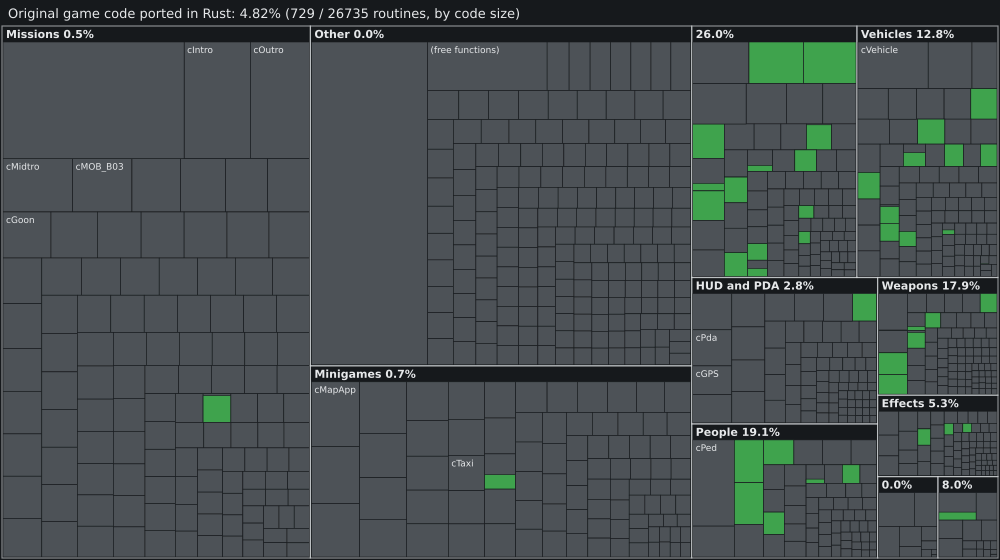

Share of the original game's machine code, by size, whose routines are implemented strictly in native Rust (src/**/*.rs).
100% measured from our native Rust codebase (0% third-party C++ code). Reference: VCS-Rust Native (PS2 PAL SLES-54622 / ULUS-10160 v1.01 target, 740 Rust functions).
Raw data: progress.json.
| Subsystem | Progress | Code | Routines |
|---|---|---|---|
Rendering & HUDImplemented in Rust:COpenGLRenderer 78/78, CHudTextFontRadar 22/22, CSunsetColorGrading 8/8, CWeaponCrosshairHUD 8/8Pending: None (100% complete) |
100.00% | 116 / 116 | |
Player & LocomotionImplemented in Rust:CStaticCollisionWorld 68/68, CPlayerPed 38/38, CAnimBlendHierarchy 38/38, CLocomotionController 23/23, CWaterPhysicsGrid 9/9Pending: None (100% complete) |
100.00% | 176 / 176 | |
Engine & VIFImplemented in Rust:CTextureRasterizer 28/28, CRenderWarePS2 17/18, CSceneManager 17/17, CModernPipeline 16/16, CVifPacketDecoder 14/14, CDATDiskReader 10/10, CViewFrustum 5/5Pending: CRenderWarePS2 17/18 (1 pending) |
99.41% | 107 / 108 | |
Vehicles & HandlingImplemented in Rust:CHandlingManager 18/18, CVehicleModel 17/17, CVehicleAccess 13/13, CTransmissionDynamics 10/10, CTireFrictionModel 10/10, CSuspension4Wheel 8/14Pending: CSuspension4Wheel 8/14 (6 pending) |
93.91% | 76 / 82 | |
AI & TrafficImplemented in Rust:CPropsObjectsManager 37/37, CTrafficManager 15/15, CPedestrianPopulation 13/13, CPedestrianObstacleAvoidance 10/10, CTrafficLightsSystem 9/10, CLeedsPathNetwork 9/9, CEmergencySirenResponse 8/8, CPedestrianPanicReaction 2/10Pending: CPedestrianPanicReaction 2/10, CTrafficLightsSystem 9/10 |
92.25% | 103 / 112 | |
Combat & WeaponsImplemented in Rust:C3DBallistics 20/20, CWeaponManager 17/17, CProjectileRocket 10/10, CFireFlamethrower 9/10, CProjectileGrenade 2/10Pending: CFireFlamethrower 9/10, CSniperScopeView 0/8, CProjectileGrenade 2/10 |
79.08% | 58 / 75 | |
World, Audio & MissionsImplemented in Rust:CWorldManager 20/42, CMissionScriptSystem 18/20, CAudioEngine 16/16Pending: CWorldManager 20/42, CMissionScriptSystem 18/20 |
77.66% | 54 / 78 |